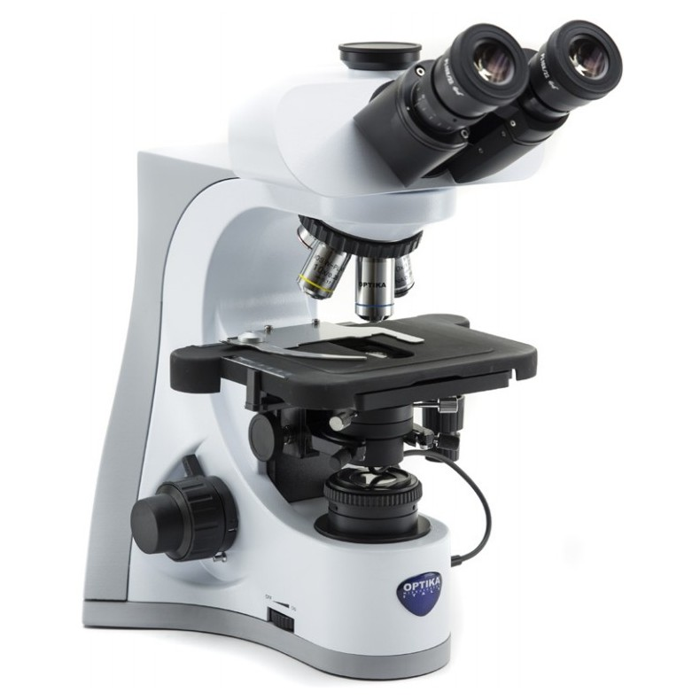

Aquí se podrá encontrar con una variedad de instrumentos para tener un buen laboratorio de
química, bien ya sea personal o profesional
En nuestro sitio web, usted puede ver los productos de nuestras sucursales, y de esa manera tendrá la facilidad de encontrarse con lo que está buscando
Por otro lado, este espacio sirve también como informativo para conocer los distintos instrumentos que se llegan a utilizar en un laboratorio de química
La Argolla Metálica es considerada como una herramienta
de metal dentro de un laboratorio químico
La balanza analítica es uno de los instrumentos de medida
más usados en laboratorio y de la cual dependen
básicamente todos los resultados analíticos
La Bureta se utiliza para emitir cantidades variables de
líquido con gran exactitud y precisión
El Triángulo de Porcelana es un instrumento de
laboratorio utilizado en procesos de calentamiento de
sustancias.
La centrífuga es un equipo de laboratorio que genera
movimientos de rotación, tiene el objetivo de separar los
componentes que constituyen una sustancia
Algunas sustancias químicas comenzarán a romperse si se
expone a la humedad durante un período prolongado de
tiempo
La finalidad que tiene la doble nuez es sujetar otras
herramientas, como una argolla metálica o una pinza de
laboratorio
La espátula es una lámina plana angosta que se
encuentra adherida a un mango hecho de madera,
plástico o metal
Una gradilla es un utensilio utilizado para dar soporte a
los tubos de ensayos o tubos de muestras

El microscopio es un instrumento que permite observar
objetos no perceptibles a al ojo humano.
Lámina de vidrio rectangular de color transparente
utilizada para almacenar muestras y objetos con el fin de
observarlas bajo el microscopio
Esta herramienta sirve para sujetar los tubos de ensayos,
mientras estos se calientan o cuando se trabaja
directamente con ellos.
Un vaso de precipitado tiene forma cilíndrica y posee un
fondo plano. Se encuentran en varias capacidades
Herramienta de metal que se une al soporte universal
para sostener verticalmente dos buretas.
La Pinza de Laboratorio se considera generalmente como
una herramienta de metal dentro de un laboratorio
químico
La pinza de crisol es una herramienta de acero inoxidable
y su función es sostener y manipular capsulas de
evaporación, crisoles y otros objetos.
El Papel tornasol o Papel pH es utilizado para medir la
concentración de Iones Hidrógenos contenido en una
sustancia o disolución
El papel filtro es un papel utilizado como tamiz que se
usa principalmente en el laboratorio para filtrar
El Mortero tiene como finalidad machacar o triturar
sustancias sólidas
Un termómetro es un instrumento utilizado para medir la
temperatura con un alto nivel de exactitud
Este ha sido un artículo informativo de lo que puede encontrar en nuestras nuevas sucursales ubicadas en la ciudad de Panamá